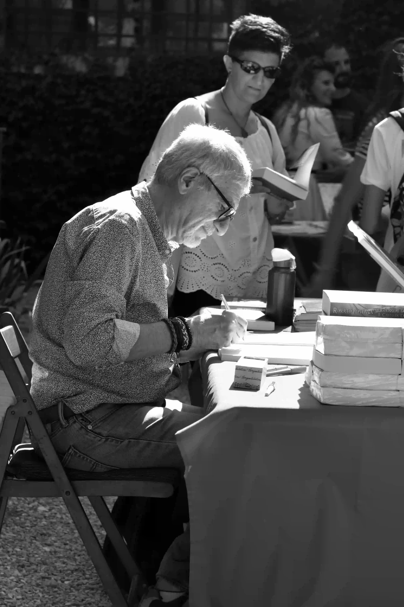

Volume I
As origens, os primeiros espaços, as referências e a formação do olhar.
MEMÓRIAS, ESPAÇO E TRAJETÓRIA
Uma autobiografia em 3 volumes sobre arquitetura, cidade, vida e criação.
© 2026 | Site Oficial da Obra Autobiográfica

Este site reúne os três volumes de uma obra autobiográfica que atravessa experiências pessoais, visão arquitetônica, pensamento crítico e a relação entre espaço, tempo e existência.
A obra autobiográfica foi escrita em 2019 e publicada em 2022. O autor arquiteta e autor de uma obra autobiográfica em três volumes sobre trajetória, memória, cidade e criação.
A proposta é transformar o site em uma extensão viva da obra: um lugar de leitura, reflexão e encontro.
As origens, os primeiros espaços, as referências e a formação do olhar.
Projetos, vivências profissionais, cidades e experiências que marcaram a trajetória.
Reflexões finais, legado, maturidade e a escrita como construção de permanência.
Os três volumes podem ser baixados digitalmente ou adquiridos em edição impressa. Um projeto editorial pensado para preservar memórias e compartilhar visão de mundo.
Textos do autor
Um espaço para pensamentos, memórias, arquitetura, cidade e experiências de vida.
Cada espaço guarda vestígios de tempo, afetos e histórias. Escrever sobre arquitetura também é escrever sobre permanência.
Ler textoUma trajetória construída entre projetos, encontros e diferentes formas de olhar o mundo.
Ler textoO processo criativo amadurece com os anos e transforma memória em linguagem.
Ler textoSolicite a edição física por WhatsApp, formulário ou link de pagamento.
COMPRAR PELO WHATSAPPPara coleção completa, dedicatória ou tiragem especial, entre em contato.
FAZER SOLICITAÇÃOEstamos por aqui também